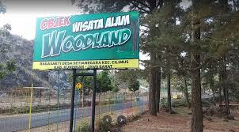
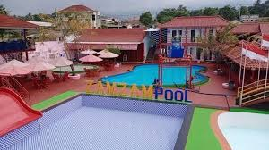
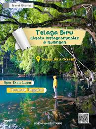

Rencanakan perjalanan impian Anda bersama kami. Destinasi eksotis menanti Anda.
Lihat Destinasi WisataJelajah Kuningan adalah agen perjalanan terpercaya yang telah melayani ribuan wisatawan sejak tahun 2010. Kami berkomitmen untuk memberikan pengalaman liburan yang tak terlupakan, aman, dan nyaman.
Moto kami: “Perjalanan Terbaik, Harga Terbaik.”

Mampir ke salah satu destinasi wisata di Kabupaten Kuningan, Jawa Barat bisa menjadi pilihan untuk mengisi waktu liburan, termasuk periode liburan sekolah yang saat ini sedang berlangsung. Salah satu destinasi wisata Kuningan yang sedang hits adalah Woodland, yang baru saja membuka wahana baru "Serodotan Pelangi" atau seluncuran pelangi, dalam Bahasa Indonesia. Lokasinya ada di Desa Setianegara, Kecamatan Cilimus, Kabupaten Kuningan.

Zamzam Pool memiliki beragam permaianan air yan seru dan bisa dicoba pengunjung. Permainan tersebut meliputi kolam busa, ikan terapi, ember tumpah, dan perosotan melingkar. Air di kolam ini diambil langsung dari mata air di daerah Kuningan sehingga terasa segar dan menyejukkan. Bila berkunjung ke sini, pengunjung dapat melihat pemandangan Gunung Ceremai yang tinggi dan memancajakan mata. Selain itu, tempat ini juga mempunyai beberapa spot foto instagramable, seperti lampion, gantungan payung, dan dekorasi sayap besar. Fasilitas yang tersedia di sini cukup lengkap dan memadai, seperti area parkir motor dan mobil. Sekan itu, ada juga musala untuk ibadah, gazebo, kamar ganti, dan kamar bilas. Sementara fasilitas di kolam renang yang bisa didapat adalah ban pelampung.

Suasana telaga sangat alami dengan pohon-pohon rindang disekitar telaga yang belum tersentuh pembangunan. Biasanya, wisatawan akan berfoto pada spot ayunan di atas telaga sambil ditemani ikan-ikan di telaga. Perpaduan obyek ini membuahkan hasil foto yang menarik. Telaga Biru Cicerem memiliki banyak spot foto yang instagramable. Wisatawan dapat membidikkan kamera di handphone sepuasnya untuk mendapat angle yang menarik. Obyek wisata inipun sempat viral di media sosial.
Dapatkan penawaran eksklusif hari ini!